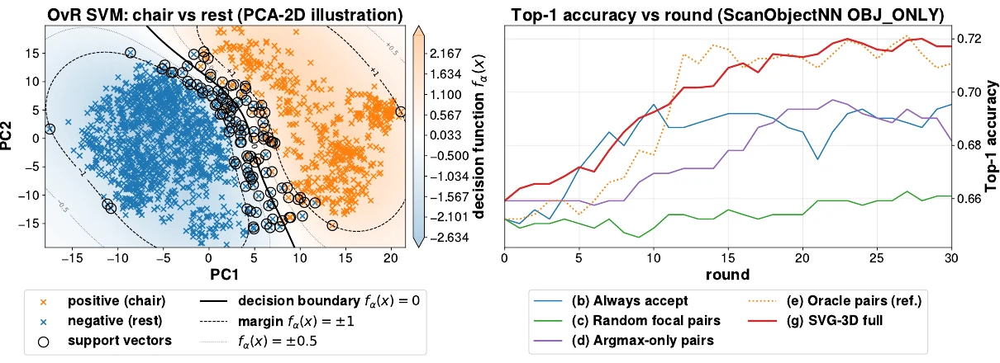
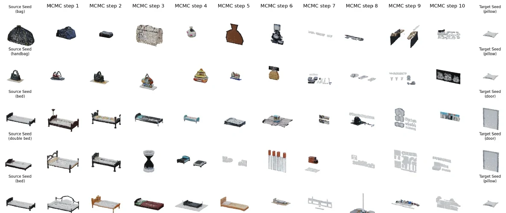

NeurIPS 2026（シドニー）ポスター発表
SVG-3D 生成スプラッティング事前分布を用いた決定境界のマイニングによる、ゼロショット3D分類
1 東京大学 2 エクイティ・コンサルティング・グループ
ポスター発表
- 日時
- 2026年12月10日（木）17:00–20:00 AEDT（日本時間 15:00–18:00）
- 会場
- Hall 1–4、ボード #S3418（シドニー）
概要
大規模な事前学習エンコーダに基づくゼロショット3D分類器は、整った合成データでは高い精度を示す一方、実環境のスキャンや破損した点群では精度が大きく下がります。SVG-3D は、エンコーダを固定したまま、生成データだけでこの差を縮めます。クラス名から3D Gaussian Splattingを生成し、凍結したエンコーダ上のカーネルマシンに必要な、少数で識別力の高いサポート集合を採掘します。
上の図では、各サンプルをガウス分布の楕円として描いています。境界を決めているのは、輪で囲んだサンプルだけです。
手法

- テキストから形状を生成するテキスト条件付きの3D Gaussian Splatting生成器 DiffSplat が、各クラス名からサンプルを生成します。
- 混同しやすいクラス対を選ぶ生成サンプルだけで計算した疑似混同行列から、上位 K 組のクラス対を選びます。このため、クラス数が増えてもサンプリング連鎖の本数は一定です。
- サポート集合を採掘するSlerp とガウス分布を組み合わせた提案分布によるメトロポリス・ヘイスティングス法で、テキスト埋め込み空間から境界を支えるサンプルを探索します。
主な結果
- 実環境ベンチマークの ScanObjectNN と ScanNet で、OpenShape、Uni3D、ReCon++、DuoduoCLIP などの既存ゼロショット3D分類器を上回る精度。
- アブレーションにより、改善の大部分がクラス対の選択規則に由来することを確認。
- 生成器を DiffSplat から Point-E に置き換えても改善を維持。
- ModelNet-C で破損の種類が既知の設定でも、平均精度が向上。

採掘されたサポートの姿

引用
@inproceedings{umagami2026svg3d,
title = {{SVG-3D}: Mining Decision Boundaries with Generative
Splatting Priors for Zero-Shot {3D} Classification},
author = {Umagami, Ryo and Ohsawa, Shohei},
booktitle = {Advances in Neural Information Processing Systems},
volume = {39},
year = {2026}
}
SVG シリーズ
- 2025Support Vector Generation言語、NeurIPS 2025
- 2026SVG-3D3D点群、NeurIPS 2026、このページ